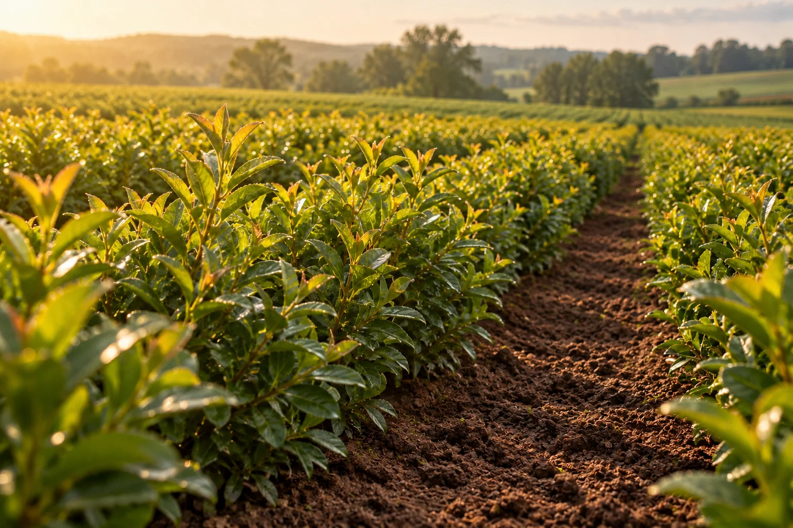

Start with cartridges
Start with cartridges rather than relying entirely on transporting finished liquid.
Local biological production
Good Growth is developing a reusable reactor and starter-cartridge system for producing microbial inputs on farms and through local agricultural businesses.
The idea is to strengthen the microbial community in your soil—the microorganisms that help cycle nutrients and support plant growth. Growers could produce at their own farm or purchase from a nearby producer without operating the equipment themselves.
In development in North Carolina. Preparing for early pilots.

Why local production
Start with cartridges rather than relying entirely on transporting finished liquid.
Explore production around when and where inputs will be used.
Produce at your farm or through a nearby agricultural partner.
Storage, handling, and application all matter. We are evaluating how local production compares on biological performance, access, timing, operator effort, and total cost—including against dry or stabilized products.
Find your fit
Explore production for your own farm or nearby growers. Prefer to purchase? Register your interest below.
Explore running a reactor for your own operation, or sharing production with a group of local growers. We’ll discuss the setup, operator tasks, and application schedule.
Discuss on-farm productionFor retailers, co-ops, and local operators interested in producing for growers nearby. We also welcome distributors interested in cartridges and reactor orders.
Discuss a local partnershipNo reactor required. Tell us where you grow to help identify where future local producers could serve demand.